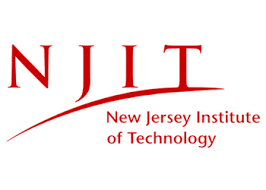
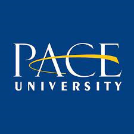

A highly organized and detail-oriented graduate student seeking a position where I can leverage my critical thinking and follow-up skills, technical and analytical skills, and passion for business operations.
|  | New Jersey Institute of Technology
MS in Business and Information Systems Expected Graduation: December 2024 |
|  | Pace University
BBA in Human Resources Management Graduated in December 2017 |
| Microsoft Office | ⭐⭐⭐⭐⭐ |
| Microsoft Power BI | ⭐⭐⭐⭐⭐ |
| Tableau | ⭐⭐⭐⭐⭐ |